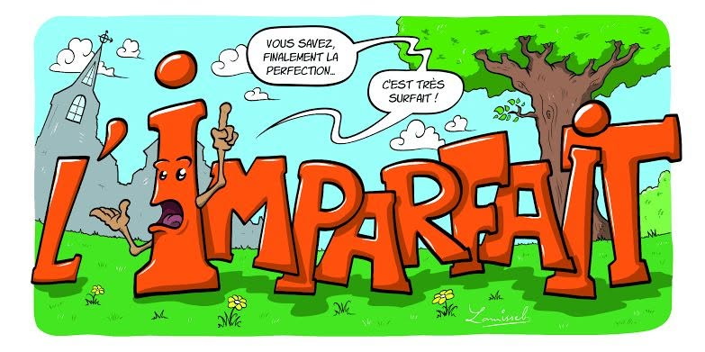

Conjugaisons à l'imparfait
Les mots ? Des jongleurs fous, désordonnés, imprévisibles,
Ils trébuchent, s’emmêlent dans le labyrinthe du sens.
Je crie dans l’oreille du temps — est-ce que ça résonne ?
Ou juste un murmure perdu dans l’écho de l’oubli ?
Je déchire la page, mais la vérité s’échappe,
Fugitive, insaisissable comme un chat sauvage.
Le monde rit de mes phrases bancales,
Mais c’est dans ce chaos que naît la lumière, fragile.
Ton regard, miroir brisé dans un café désert,
Reflet tordu où je me cherche sans jamais me trouver.
Un sourire éclaire, fugace, la nuit de mes doutes,
Mais le temps, ce voleur, le vole et le cache ailleurs.
On danse, maladroits, sur des notes fausses,
Chorégraphie fragile d’âmes qui se croisent.
Et moi, poète de l’imparfait, je ris et je pleure,
Parce qu’aimer, c’est aussi tomber, encore, sans filet.
Tes mots sont des éclairs dans un ciel gris,
Ils frappent, blessent, allument, puis s’effacent.
Un feu d’artifice qui brûle sans prévenir,
Et moi, je reste là, trempé par la pluie.
Entre vérité et mensonge, je navigue à vue,
Capitaine d’un bateau sans boussole ni carte.
Tu es cette tempête qui fait chavirer mon calme,
Mais aussi le phare qui me guide vers demain.
Ton regard, c’est un labyrinthe sans sortie,
Un miroir qui me renvoie mille visages,
Chaque reflet me perd, me dérobe un paysage,
Je me perds en toi, prisonnier sans fuite.
Tu joues à cache-cache avec mes certitudes,
Brisant mes règles comme un enfant rebelle,
Mais sous ta carapace, une âme s’étincelle,
Fragile, à fleur de peau, pleine d’incertitudes.
Dans ce chaos d’ombres, je cherche un éclat,
Un point de lumière, un signe, un combat,
Car aimer, c’est plonger sans filet ni raison,
C’est danser sur un fil entre peur et passion.
Djamel Metref
At Yenni le 13 août 2025

← Tous les poèmes